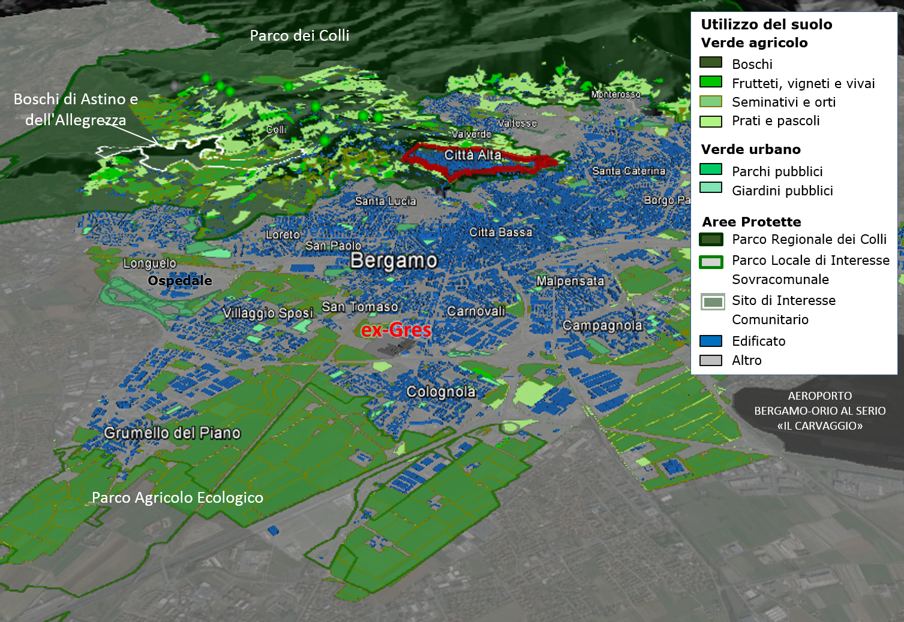
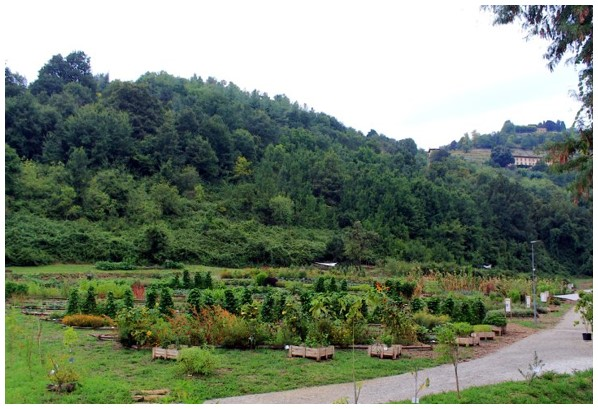
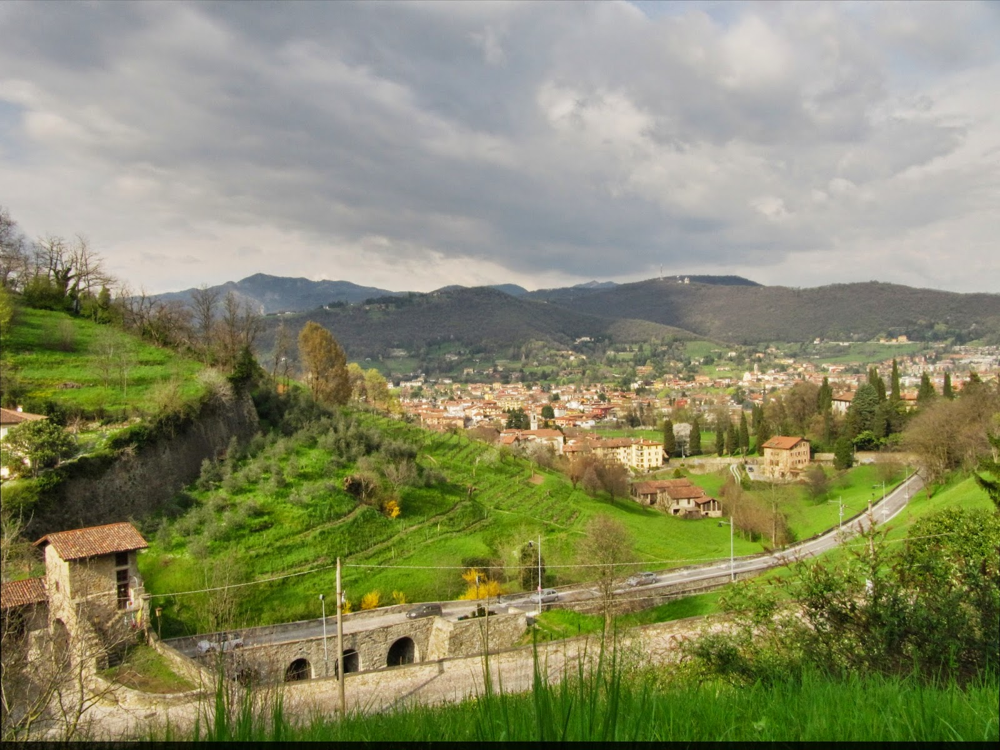

| Verde agricolo urbano | |
|  Elaborazione del rapporto tra tessuto verde e costruito di Bergamo | |
 Orto botanico – Valle della biodiversità  Terrazzamenti presso Porta S. Lorenzo |
La
situazione di Bergamo è esemplare a tal proposito, in quanto il tessuto
verde dei colli su cui la città è allignata, è stato conservato nel
tempo grazie a scelte politico-amministrative per la salvaguardia e la
qualità paesaggistica e ambientale urbana, operate nel XX secolo. Il
Parco dei Colli, istituito nel 1977 ma individuato come ambito di
salvaguardia già dal Piano Regolatore Muzio-Morini (1951-1956), non
solo ha contribuito alla preservazione del verde urbano, ma ha anche
favorito la formazione di una forte consapevolezza del valore
collettivo e identitario del verde nei cittadini. Il
patrimonio naturale del Parco, che comprende l’area nord della città, è
costituito non solo da boschi, come quelli dell’Allegrezza e di Astino
– situati nella Conca che sovrasta l’area ex-Gres e riconosciuti come
Siti d’Interesse Comunitario per il proprio valore naturalistico –,
ma anche da numerose aree coltivate. Infatti, all’interno del Parco si
possono ancora oggi identificare vigneti e frutteti sui terreni
terrazzati lungo le pendici dei colli, mentre si stanno diffondendo
nuove esperienze legate al recupero degli usi tradizionali del
territorio anche mediante la realizzazione di orti sociali sulle mura.
Inoltre, presso il Convento d’Astino recentemente è stata inaugurata la
sede distaccata dell’Orto Botanico Lorenzo Rota dove sono stati
ristabiliti gli antichi orti, oggi a disposizione dei cittadini, al
fine di ricostituire la "Valle della Biodiversità". Qui, in circa 9.000
metri quadri di terreno, sono state piantate approssimativamente 300
specie di piante, tra le quali antiche colture locali, come la sbresa,
una varietà bergamasca d’ulivo, piante aromatiche e officinali, alberi
da frutto, mais e grano. In quest’area vengono proposte iniziative
didattiche, culturali e laboratori (Belotti, 2015). Più a sud, nei
pressi dell’area del
Palaghiaccio alcuni spazi sono stati adibiti a orti urbani, con la
concessione
da parte dell’amministrazione di porzioni di terreno comunale ai cittadini. Immediatamente a
ridosso di quest'area, e di ben più rilevante significato, si trova il Parco
Agricolo Ecologico (PAE). Quest’ultimo è situato nella parte sud-occidentale
della città, tra Bergamo e Stezzano, su un’area di circa 360 ettari. Il parco
agricolo è stato creato tra il 2009 e il 2011, a seguito dell’iniziativa di un
gruppo di cittadini che risiedono nelle vicinanze di questo territorio
interessato da un intenso sfruttamento dovuto alla presenza di edifici
residenziali, insediamenti industriali, centri commerciali e grandi infrastrutture
(inceneritore, depuratore, autostrada A4, asse interurbano, ferrovia
Bergamo-Treviglio). A partire dal 2003, questi cittadini hanno lavorato insieme alle associazioni ambientaliste locali per la creazione di un Parco Locale di Interesse Sovracomunale (PLIS). Oltre al Parco dei Colli e al PAE, la città possiede una vasta rete di aree verdi con parchi di grandi dimensioni così come piccoli giardini, attrezzati e non (2,4% della superficie comunale), che costituiscono luoghi di aggregazione importanti per gli abitanti dei quartieri limitrofi. Un esempio è il Parco della Trucca, sorto nei pressi del nuovo ospedale Papa Giovanni XXIII. Il Parco è attrezzato con panchine, sentieri, tavoli, laghetti, fontanelle, zona bar e al suo interno in estate vengono organizzate differenti attività di svago. Per quanto riguarda questi spazi verdi è importante segnalare l’interesse dell’amministrazione comunale per il coinvolgimento dei cittadini nella loro gestione. |